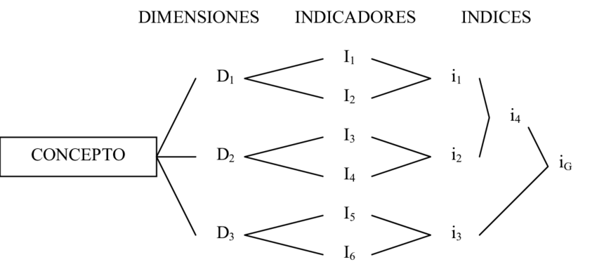

Metodología de la Investigación

Metodología de la Investigación

Durante el periodo comprendido de enero a marzo del año 2023, se dedicó tiempo al estudio de los primeros temas contenidos en los tres módulos que conforman el primer parcial de la metodología de la investigación. Esta fase inicial del semestre se dividió en varias semanas, durante las cuales se abordaron diversos conceptos, como los fundamentos de la metodología de la investigación y la importancia de la investigación en sí misma.
Durante la duración del curso se realizan pruebas parciales, tres para ser exactos. Estos parciales se realizan cada dos meses y están fundamentados en módulos, que son impartidos en dos o tres semanas cada uno. Es por ello que el portafolio correspondiente al curso está dividido por parciales.
La investigación desempeña un papel fundamental en el avance del conocimiento y el desarrollo de la sociedad. A través de la investigación, se exploran preguntas, se generan nuevos descubrimientos y se obtienen respuestas fundamentadas. Proporciona una base sólida para la toma de decisiones informadas en diversos campos, desde la ciencia y la tecnología hasta la medicina y las ciencias sociales. La investigación nos permite comprender mejor el mundo que nos rodea, resolver problemas complejos, impulsar la innovación y mejorar la calidad de vida de las personas. En resumen, la investigación es el motor que impulsa el progreso y nos permite avanzar hacia un futuro mejor.
Ken Lou es de nacionalidad guatemalteca, su aporte a la humanidad es un leño ecológico hecho de materiales reciclados que al prender en llamas no daña el medio ambiente ni es perjudicial para la salud.
Opino que esto es un gran invento que gracias a la investigación pudo crear este invento y así ayudar a la humanidad y cuidado del medio ambiente.
Edgar Duarte, ingeniero en mecatrónica de nacionalidad guatemalteca invento un dispositivo que pudiera alertar en tiempo real a un usuario acerca de la calidad de agua de su hogar. Creo que es un gran invento para todos los lugares que no cuentan con agua potable ya que podrán saber si el agua que llega a su hogar es potable o no y así poder tratar el agua y que todos tengan acceso a agua potable sería un gran avance en Guatemala.
Es la parte que menciona el problema y su función es compilar la información del tema y ver los aportes novedosos del mismo, y ayuda a formular de una forma confiable las conclusiones de un proyecto o, en su defecto, replantear las preguntas con la mayor profundidad posible.
La function de este es brindar una descripción clara de las razones por las cuales es necesario realizar la investigación, cabe de aclarar que esto tiene que ser de carácter conveniente de manera que Justifique la inversion de recursos esfuerzo y tiempo.
este incluye los ámbitos que abarca y cuales son los limites del mismo que en sus pasos incluida la definición de la problemática.
Consiste en aplicar principios generales a casos particulares, a partir de ciertos enlaces de juicios. Esto pasa por: 1) encontrar principios desconocidos a partir de los ya conocidos, y 2) descubrir consecuencias desconocidas de principios ya conocidos.
Empleado sobre todo en la lógica y el razonamiento formal, extrae de un conjunto finito de premisas comprobadas una conclusión única y verdadera.
Es el método basado en la lógica del silogismo, es decir, de la comparaciónLinks to an external site. de dos premisas iniciales para obtener una conclusión final. Generalmente la premisa inicial es general o universal, la segunda premisa es particular, y la conclusión puede ser lo uno o lo otro.
Se trata del método que parte de una hipótesis o explicación inicial, para luego obtener conclusiones particulares de ella, que luego serán a su vez comprobadas experimentalmente. Es decir, comprende un paso inicial de inferencias empíricas (observación, por ejemplo) que permiten deducir una hipótesis inicial que sea luego sometida a experimentación.
Propone el camino inverso: a partir de premisas particulares, se infieren conclusiones universales o generales, ya sea mediante inducciones completas (se consideran todos los elementos que integran el objeto de estudio) o incompletas (se consideran solamente algunos de los elementos que lo componen)
Es donde se realizan una seria de preguntas a los participantes de la investigación o a personas externas a ellas, esto lo considero como una forma de recolección de datos ya que por su facilidad esto se podrían realizar ya sea en persona, por correo, hasta incluso en una llamada.
Es la interacción que involucra al investigador y los participantes en preguntas que se formulan en personas donde se realizan preguntas detalladas para obtener información detallada del participante.
Es la forma de una tarea física o mental para que así se determine las respuestas correctas.
Tiene un lugar cuando el investigador examina y extrae la información de documentos que contienen datos de la investigación que se realiza ya sean por métodos privados o públicos .
Es la medida caracterizadas fisicamente de un participante y son registradas, ya sea como su presión arterial, ritmo cardiaco, incluso su fortalezas físicas, y esto normalmente se usa para determinar el estado fisio del participante antes y después de la investigación.
Es una forma organizada para alcanzar un determinado objetivo se aplica en distintas áreas de estudio. Es la forma en que una persona esta habituada a realizar una tarea, El significado de la palabra método tiene que ver con muchas connotaciones, ya que en todas las disciplinas se necesita de un método para realizar cualquier trabajo, proyecto, idea entre otras cosas necesitando una manera de planificar las acciones que conlleva todo el proceso.
Es la manera de un conjunto de procedimientos, materiales o intelectuales son aplicados en tareas especificas con base de su conocimiento para obtener un resultado. También es una técnica la destreza o habilidad particular de una persona para valerse de estos procedimientos o recurso
Es una ciencia y una rama de las matemáticas a través de la cual se recolecta, analiza, describe y estudia una serie de datos a fin de establecer comparaciones o variabilidades que permitan comprender un fenómeno en particular. La estadística se vale, en gran medida, de la observación para la recolección de datos que posteriormente serán analizados y comparados a fin de obtener un resultado.
se propone determinar leyes universales que expliquen un fenómeno a partir de datos numéricos cuantificables.
que no puede ser cuantificada busca explicar el significado de un fenómeno a través del análisis, evaluación e interpretación de informaciones que se recogen en entrevistas, registros, conversaciones,
estudio de campo o trabajo de campo, es el proceso que permite obtener datos de la realidad y estudiarlos tal y como se presentan, sin manipular las variables. Por esta razón, su característica esencial es que se lleva a cabo fuera del laboratorio, en el lugar de ocurrencia del fenómeno
aquella que procura obtener, seleccionar, compilar, organizar, interpretar y analizar información sobre un objeto de estudio a partir de fuentes documentales, tales como libros, documentos de archivo, hemerografía, registros audiovisuales, entre otros
Objetivos de nuestra tesina. General. Verificar que la seguridad informática garantice que el material y los recursos de software de una organización, se usen únicamente para los propósitos que fueron creados. Específicos. Comprender la importancia de la privacidad segura y las diferentes técnicas que utilizan los hackers y las consecuencias de un ataque cibernético. Mantener la privacidad del control y autenticidad de la información que manejamos mediante la computadora. Lo que se busca con los objetivos presentados es llegar a conocer información sobre la seguridad informática, una comprensión del tema, en el caso del objetivo General, se busca llegar hacía toda la información que nos ayude a tener una buena guía sobre la utilización de esta herramienta, que no se utilice con un fin distinto al planificado. En los objetivos específicos se busca demostrar el porque los ataques cibernéticos pueden tener un gran alcance y la cantidad de problemas que estos pueden ocasionar, de que manera llegan hasta nuestro computador o dispositivo, cuales son los métodos que principalmente se utilizan y que tanto daño nos pueden ocasionar Se busca también el conocer de que manera se puede tener nuestro dispositivo seguro, que herramientas podemos utilizar o de que manera identificar si nos buscan realizar un ataque.
La hipótesis conceptual es la respuesta teórica a la pregunta planteada. La forma concreta por la que se pretende demostrar la hipótesis conceptual es la hipótesis operativa. Los objetivos son la razón de ser y hacer en la investigación.
Variable es una palabra que representa a aquello que varía o que está sujeto a algún tipo de cambio. Se trata de algo que se caracteriza por ser inestable, inconstante y mudable.
Indicador significa que indica o sirve para indicar. Índice tiene varios significados, es indicio o señal de algo.
La estadística aporta al investigador, en su fase de formulación del problema, la definición y clasificación de los tipos de variables aleatorias que conforman la problematización de la investigación.
Las técnicas de recolección de datos son mecanismos e instrumentos que se utilizan para reunir y medir información de forma organizada y con un objetivo específico.